Винты
83 типов изделий в категории.

DIN 316 винт барашковый

DIN 316 винт-барашек с прямоугольными лепестками

DIN 404 винт пломбировочный с отверстиями
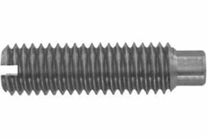
DIN 417 Винт установочный с цилиндрическим концом
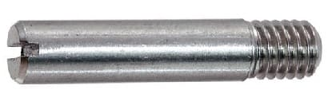
DIN 427 Винт установочный (штифт резьбовой)

DIN 438 Винт установочный с засверленным концом

DIN 464 Винт с накатанной головкой

DIN 478 винт установочный с квадратной головкой и подголовником
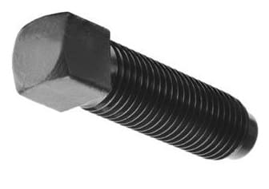
DIN 479 Винт установочный с квадратной головкой
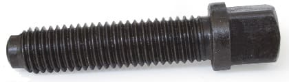
DIN 480 Винт с квадратной головкой и закруглённым концом

DIN 551 Винт установочный с плоским концом

DIN 553 Винт установочный с коническим концом и прямым шлицем
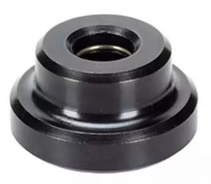
DIN 6311 Подушка упорная

DIN 6332 винт установочный с упорной цапфой и внутренним шестигранником

DIN 653 Винт прижимной низкий с накаткой

DIN 6912 винт с низкой цилиндрической головкой и внутренним шестигранником
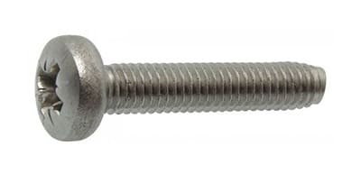
DIN 7500 C винт резьбовыдавливающий Taptite с цилиндрической головкой со сферой
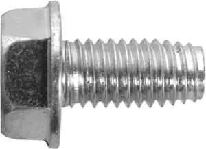
DIN 7500 D винт резьбовыдавливающий Taptite с шестигранной головкой с фланцем
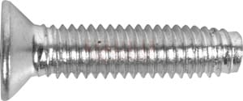
DIN 7500 M винт резьбовыдавливающий Taptite с потайной головкой
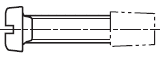
DIN 7500 Винты резьбовыдавливающие Taptite - формы

DIN 7500 Е резьбовыдавливающий винт Taptite с цилиндрической головкой и внутренним шестигранником

DIN 7513 A винт самонарезающий с шестигранной головкой
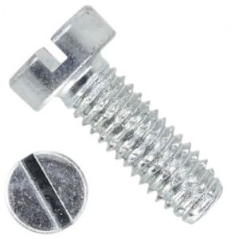
DIN 7513 B винт самонарезающий с цилиндрической головкой

DIN 7516 D винт самонарезающий с потайной головкой

DIN 7516 E винт самонарезающий с полупотайной головкой

DIN 7516 А винт самонарезающий с полукруглой головкой
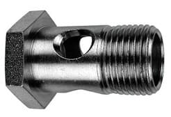
DIN 7643 винт полый
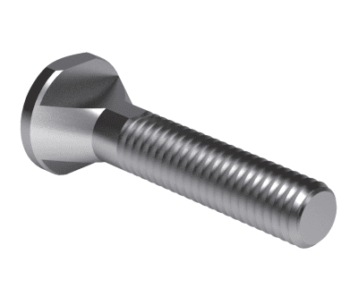
DIN 787 винт пазовый станочный для Т-образных пазов

DIN 7964 винт невыпадающий с шестигранной головкой

DIN 7969 MU винт с потайной головкой и гайкой

DIN 7984 Винт с низкой головкой с внутренним шестигранником или шлицем Torx
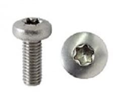
DIN 7985 Винт с цилиндрической головкой со шлицем Torx
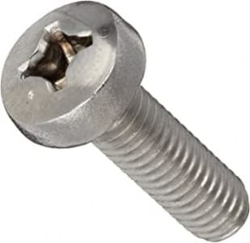
DIN 7985 винт с цилиндрической головкой с полусферой и крестообразным шлицем
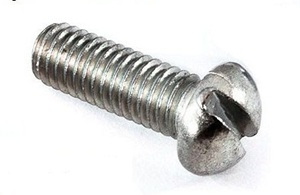
DIN 7985 и ГОСТ 17473-80 сравнение стандартов на винты
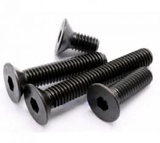
DIN 7991 (ISO 10642) винт с потайной головкой и внутренним шестигранником

DIN 84 винт с цилиндрической головкой и прямым шлицем (ISO 1207)

DIN 85 Винт с цилиндрической скруглённой головкой и прямым шлицем

DIN 912 винт с цилиндрической головкой и внутренним шестигранником
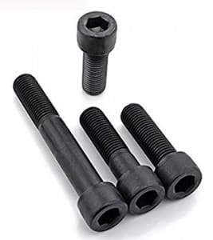
DIN 912 винт с цилиндрической головкой и внутренним шестигранником, мелкая резьба

DIN 913 Винт установочный с внутренним шестигранником и плоским концом
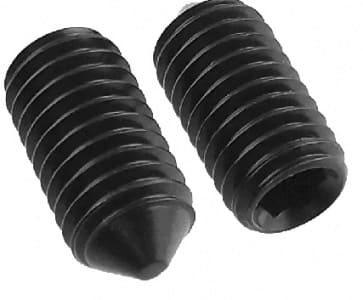
DIN 914 винт установочный с внутренним шестигранником и коническим концом

DIN 915 (ISO 4028) винт установочный с внутренним шестигранником и цапфой

DIN 916 Винт установочный с внутренним шестигранником и засверленным концом
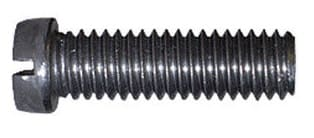
DIN 920 Винт с уменьшенной цилиндрической головкой и прямым шлицем
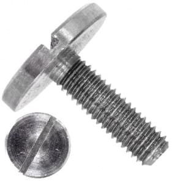
DIN 921 Винт с увеличенной плоской головкой и прямым шлицем
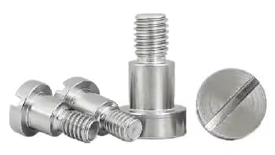
DIN 923 Винт ступенчатый с плоской головкой и прямым шлицем

DIN 927 винт с цилиндрической цапфой и прямым шлицем

DIN 963 винт с потайной головкой
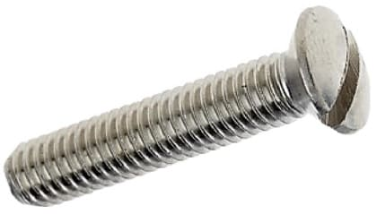
DIN 964 винт с полупотайной головкой и прямым шлицем

DIN 965 Винт с потайной головкой

DIN 965 винт с потайной головкой и шлицем Torx
DIN 965 и ГОСТ 17475-80 винты с потайной головкой, сравнение стандартов

DIN 966 винт с полупотайной головкой и шлицем PH

DIN 967 винт мебельный с прессшайбой
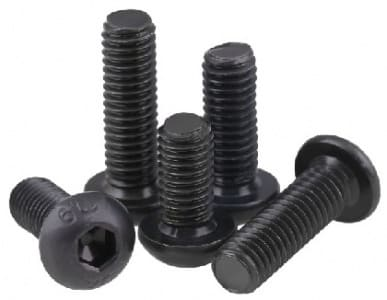
DIN ISO 7380-1 винт с полукруглой головкой и внутренним шестигранником

DIN ISO 7380-2 винт с полукруглой головкой с фланцем и внутренним шестигранником

ISO 1207 винт с низкой цилиндрической головкой с прямым шлицем

ISO 14581 винт с потайной головкой под ключ TORX
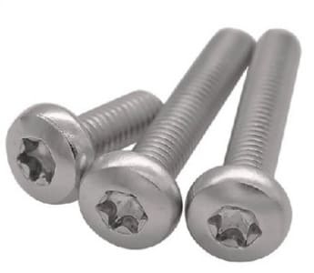
ISO 14583 винт с цилиндрической скруглённой головкой со шлицем Torx
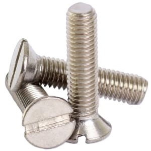
ISO 2009 винт с потайной головкой
ISO 4762 (DIN 912) Винт (болт) с цилиндрической головкой и внутренним шестигранником

ISO 7045 винт с полукруглой головкой
ISO 7046 винт с потайной головкой

ISO 7379 Винт с утолщенным стержнем

Винт DIN 966 с полупотайной головкой с крестообразныv шлицем PZ
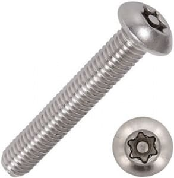
Винт антивандальный Torx-Pin с полукруглой головкой ART 88116

Винт антивандальный с полукруглой головкой и внутренним шестигранником со штифтом 88113
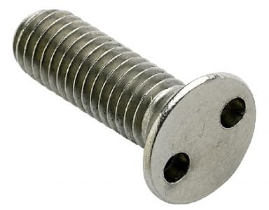
Винт антивандальный с потайной головкой с двумя отверстиями ART 88112
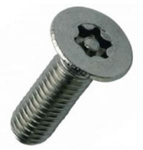
Винт антивандальный с потайной головкой со шлицем Torx-Pin ART 88117
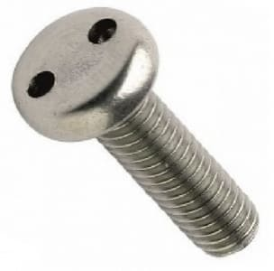
Винт антивандальный с цилиндрической головкой с двумя отверстиями ART 88111
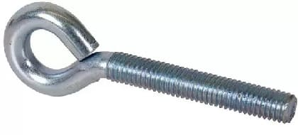
Винт- кольцо с метрической резьбой ART 88136
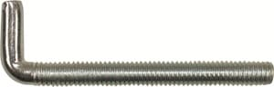
Винт-крюк L (Г) - образный ART 88138
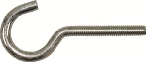
Винт-полукольцо с метрической резьбой ART 88142

Винты DIN
Винты DIN 912 аналог ГОСТ 11738-84
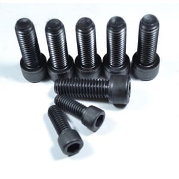
ГОСТ 11738 84 винт с внутренним шестигранником
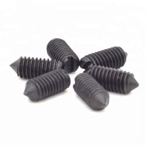
ГОСТ 1476-93 винт установочный
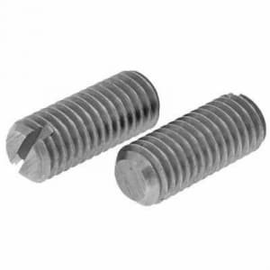
ГОСТ 1477-93 винт установочный

ГОСТ 1478-93 винт установочный

ГОСТ 1491-80 винт с цилиндрической головкой
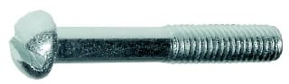
ГОСТ 17473-80 винт с полукруглой головкой

ГОСТ 17475-80 винт с потайной головкой